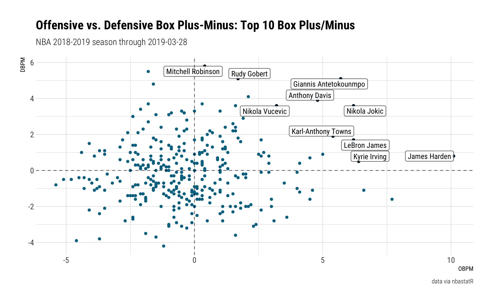

library(tidyverse)
library(glue)
library(gt)
library(hrbrthemes)
library(ggpomological)
library(highcharter)Grab the the most recent advanced metrics from basketball reference using the {nbastatR} package by Alex Bresler. Note, running bref_players_stats() will assign the output data frames, dataBREFPlayerTotals and dataBREFPlayerAdvanced, to the environment, so we don’t need to do anything else (I rename them for my own sanity).
library(nbastatR)
bref_players_stats(seasons = 2019, tables = c("advanced", "totals"),
widen = TRUE, assign_to_environment = TRUE)
bref_advanced <- dataBREFPlayerAdvanced
bref_totals <- dataBREFPlayerTotalsI always like to start out by skimming with the skimr package…
skimr::skim(bref_advanced)
#> Skim summary statistics
#> n obs: 501
#> n variables: 36
#>
#> ── Variable type:character ──────────────────────────────────────────────────────────────────
#> variable missing complete n min max empty n_unique
#> idPlayer 0 501 501 6 9 0 501
#> idPlayerSeason 0 501 501 11 14 0 501
#> idPosition 0 501 501 1 5 0 13
#> namePlayer 0 501 501 4 24 0 501
#> namePlayerBREF 0 501 501 7 24 0 501
#> slugSeason 0 501 501 7 7 0 1
#> slugTeamBREF 0 501 501 3 3 0 31
#> urlPlayerHeadshot 15 486 501 86 89 0 486
#> urlPlayerThumbnail 0 501 501 52 89 0 501
#>
#> ── Variable type:logical ────────────────────────────────────────────────────────────────────
#> variable missing complete n mean count
#> isHOFPlayer 0 501 501 0 FAL: 501, NA: 0
#>
#> ── Variable type:numeric ────────────────────────────────────────────────────────────────────
#> variable missing complete n mean sd p0
#> agePlayer 0 501 501 26.08 4.18 19
#> countGames 0 501 501 44.04 22.57 1
#> idPlayerNBA 0 501 501 880176.29 724825.17 1114
#> minutes 0 501 501 1005.99 745.5 1
#> pct3PRate 5 496 501 0.36 0.21 0
#> pctAST 0 501 501 0.13 0.094 0
#> pctBLK 0 501 501 0.17 0.28 0
#> pctDRB 0 501 501 0.15 0.084 0
#> pctFTRate 5 496 501 0.24 0.14 0
#> pctORB 0 501 501 0.073 0.14 0
#> pctSTL 0 501 501 0.12 0.26 0
#> pctTOV 4 497 501 0.12 0.055 0
#> pctTRB 0 501 501 0.1 0.059 0
#> pctTrueShooting 4 497 501 0.53 0.11 0
#> pctUSG 0 501 501 0.19 0.059 0
#> ratioBPM 0 501 501 -1.95 5.61 -52.7
#> ratioDBPM 0 501 501 -0.55 2.68 -20.5
#> ratioDWS 0 501 501 1.02 0.98 -0.4
#> ratioOBPM 0 501 501 -1.4 4.3 -36.1
#> ratioOWS 0 501 501 1.1 1.66 -2.7
#> ratioPER 0 501 501 12.99 7.62 -38
#> ratioVORP 0 501 501 0.51 1.18 -1.9
#> ratioWS 0 501 501 2.12 2.44 -1.6
#> ratioWSPer48 0 501 501 0.076 0.12 -0.95
#> yearSeason 0 501 501 2018 0 2018
#> yearSeasonFirst 15 486 501 2013.49 4.36 1989
#> p25 p50 p75 p100 hist
#> 23 25 29 42 ▃▇▇▆▃▁▁▁
#> 26 50 64 72 ▃▂▂▂▂▃▅▇
#> 2e+05 2e+05 1628383 1629541 ▇▁▁▁▁▁▁▇
#> 292 945 1672 2671 ▇▃▃▃▃▃▃▁
#> 0.23 0.38 0.52 0.9 ▇▃▇▇▇▅▂▁
#> 0.068 0.11 0.18 0.59 ▆▇▃▂▁▁▁▁
#> 0.012 0.024 0.2 0.9 ▇▁▁▁▁▁▁▁
#> 0.1 0.14 0.19 0.92 ▅▇▂▁▁▁▁▁
#> 0.15 0.23 0.32 0.86 ▃▇▇▃▂▁▁▁
#> 0.02 0.034 0.074 1 ▇▁▁▁▁▁▁▁
#> 0.013 0.016 0.024 0.9 ▇▁▁▁▁▁▁▁
#> 0.095 0.12 0.15 0.5 ▂▇▆▁▁▁▁▁
#> 0.062 0.087 0.13 0.52 ▅▇▃▁▁▁▁▁
#> 0.5 0.55 0.58 0.83 ▁▁▁▁▃▇▁▁
#> 0.15 0.18 0.22 0.47 ▁▁▇▆▂▁▁▁
#> -3.9 -1.4 0.6 27.2 ▁▁▁▁▃▇▁▁
#> -1.7 -0.5 0.9 8.6 ▁▁▁▁▂▇▂▁
#> 0.2 0.8 1.5 5 ▇▇▆▃▂▁▁▁
#> -2.8 -1.1 0.3 22.3 ▁▁▁▁▇▂▁▁
#> 0 0.5 1.7 9.1 ▁▇▆▂▂▁▁▁
#> 9.4 12.6 16.5 80.8 ▁▁▁▇▁▁▁▁
#> -0.1 0.1 0.8 8.1 ▁▇▂▁▁▁▁▁
#> 0.2 1.3 3.1 13 ▆▇▅▂▁▁▁▁
#> 0.039 0.081 0.13 1.26 ▁▁▁▇▂▁▁▁
#> 2018 2018 2018 2018 ▁▁▁▇▁▁▁▁
#> 2011 2015 2017 2018 ▁▁▁▁▁▂▃▇Now we can filter and munge as needed:
adv_player_stats <- bref_advanced %>%
filter(minutes >= 500) %>%
mutate(bref_url = glue::glue("https://www.basketball-reference.com/players/{stringr::str_sub(idPlayer, 1, 1)}/{idPlayer}.html"),
bref_link = glue::glue('<a href="{bref_url}">{namePlayer}</a>'))Collapse positions into front and backcourt:
unique_positions <- unique(bref_advanced$idPosition)
frontcourt <- c("PF", "SF", "C", "PF-SF", "C-PF", "SG-PF", "SF-PF")
backcourt <- c("PG", "SG", "PG-SG", "SG-PG", "SF-SG", "SG-SF")
bref_efg <- bref_totals %>%
select(one_of(c("idPlayer", "pctEFG")))
adv_player_stats <- adv_player_stats %>%
left_join(bref_efg, by = "idPlayer") %>%
mutate( "position" = case_when(
idPosition %in% frontcourt ~ "frontcourt",
idPosition %in% backcourt ~ "backcourt",
TRUE ~ "other"),
"position" = as.factor(position)
)Let’s also get some info from the NBA Stats API using teams_players_states(). By using assign_to_environment = TRUE, we’ll automatically get a data frame dataGeneralPlayers. For now I just want players’ offensive rating1, ortg, and defensive rating2, drtg.
nbastatR::teams_players_stats(seasons = 2019, types = c("player"),
tables = "general", measures = "Advanced",
assign_to_environment = TRUE)
player_rtgs <- dataGeneralPlayers %>%
select(one_of(c("idPlayer", "ortg", "drtg")))
adv_player_stats <- adv_player_stats %>%
left_join(player_rtgs, by = c("idPlayerNBA" = "idPlayer"))
adv_player_stats %>%
ggplot(aes(x = ratioPER)) +
geom_histogram()
Let’s get some help from glue and hrbrthemes…
adv_player_stats %>%
ggplot(aes(x = ratioPER)) +
geom_histogram(alpha = 0.7, fill = "#011627") +
labs(title = "PER for players with 500+ minutes",
subtitle = "NBA 2018-2019 season",
caption = glue::glue("data via nbastatR {yesterday}")) +
hrbrthemes::theme_ipsum_rc()
adv_player_stats %>%
ggplot(aes(x = ratioVORP)) +
geom_histogram(alpha = 0.7, fill = "#011627") +
labs(title = "Value Over Replacement Player (VORP)",
subtitle = "NBA 2018-2019 season, players with 500+ minutes",
caption = glue::glue("data via nbastatR {yesterday}")) +
hrbrthemes::theme_ipsum_rc()
adv_player_stats %>%
ggplot(aes(x = ratioWS)) +
geom_histogram(alpha = 0.7, fill = "#011627") +
labs(title = "Win Shares for players with 500+ minutes",
subtitle = "NBA 2018-2019 season",
caption = glue::glue("data via nbastatR {yesterday}")) +
hrbrthemes::theme_ipsum_rc()Histograms are all well and good, but let’s look at something a little more interesting…
adv_player_stats %>%
ggplot(aes(x = ratioOBPM, y = ratioDBPM)) +
geom_point() +
geom_hline(yintercept = 0, alpha = 0.6, lty = "dashed") +
geom_vline(xintercept = 0, alpha = 0.6, lty = "dashed") +
labs(title = "Offensive vs. Defensive Box Plus-Minus",
subtitle = glue::glue("NBA 2018-2019 season through {yesterday}"),
caption = glue::glue("data via nbastatR"),
x = "OBPM",
y = "DBPM") +
hrbrthemes::theme_ipsum_rc()Things are a pretty boring without annotation — and we’re not doing much in the way of storytelling. Luckily Hiroaki Yutani’s gghighlight package can help us out with that!
Because gghighlight uses a predicate function to determine what to highlight, I’ll make a little helper fun to get the top 10 players for some variable.
get_top10 <- function(df, column) {
require(rlang)
column <- enquo(column)
dplyr::top_n(df, n = 10, wt = !!column) %>%
pull(namePlayer)
}Things are looking a little more complex, so let’s look at the pieces of code in this next section.
# get top 10 for desired variable (in this case ratioBPM)
top10_BPM <- top_n(adv_player_stats, n = 10, wt = ratioBPM) %>%
pull(namePlayer)
adv_player_stats %>%
ggplot(aes(x = ratioOBPM, y = ratioDBPM)) +
geom_point(color = "#011627") +
gghighlight::gghighlight(namePlayer %in% top10_BPM, label_key = namePlayer,
label_params = list(fill = ggplot2::alpha("white", 0.8),
box.padding = 0,
family = "Roboto Condensed"),
unhighlighted_colour = "#007190") +
geom_hline(yintercept = 0, alpha = 0.6, lty = "dashed") +
geom_vline(xintercept = 0, alpha = 0.6, lty = "dashed") +
labs(title = "Offensive vs. Defensive Box Plus-Minus: Top 10 Box Plus/Minus",
subtitle = glue::glue("NBA 2018-2019 season through {yesterday}"),
caption = glue::glue("data via nbastatR"),
x = "OBPM",
y = "DBPM") +
hrbrthemes::theme_ipsum_rc()
Predicate functions won’t always hit everything you want to see, which is why interactive visualizations can be a great tool for exploration. There are also some widgets and add-ins in RStudio that can help out with this.3
Since we’re using distill for R Markdown, we have some nice options in terms of figure layout. Below, I’ll use layout="l-body-outset" as a chunk parameter.
top10_WS <- get_top10(adv_player_stats, ratioWSPer48)
adv_player_stats %>%
ggplot(aes(x = ratioOWS, y = ratioDWS)) +
geom_point(color = "#011627") +
gghighlight::gghighlight(namePlayer %in% top10_WS, label_key = namePlayer,
label_params = list(fill = ggplot2::alpha("white", 0.8),
box.padding = 0,
family = "Roboto Condensed"),
unhighlighted_colour = "#007190") +
geom_hline(yintercept = 0, alpha = 0.6, lty = "dashed") +
geom_vline(xintercept = 0, alpha = 0.6, lty = "dashed") +
labs(title = "Offensive vs. Defensive Win Shares: Top 10 WS Per 48",
subtitle = glue::glue("NBA 2018-2019 season through {yesterday}"),
caption = glue::glue("data via nbastatR"),
x = "OWS",
y = "DWS") +
hrbrthemes::theme_ipsum_rc()
We can go even wider by using layout="l-page".
top10_EFG <- get_top10(adv_player_stats, pctEFG)
adv_player_stats %>%
ggplot(aes(x = (pctTrueShooting - mean(pctTrueShooting)), y = (ratioPER - mean(ratioPER)))) +
geom_point(color = "#011627") +
gghighlight::gghighlight(namePlayer %in% top10_EFG, label_key = namePlayer,
label_params = list(fill = ggplot2::alpha("white", 0.8),
box.padding = 0,
family = "Roboto Condensed"),
unhighlighted_colour = "#007190") +
geom_hline(yintercept = 0, alpha = 0.6, lty = "dashed") +
geom_vline(xintercept = 0, alpha = 0.6, lty = "dashed") +
labs(title = "TS% above avg vs. PER above avg: Top 10 EFG%",
subtitle = glue::glue("NBA 2018-2019 season"),
caption = glue::glue("data via nbastatR, {yesterday}"),
x = "true shooting %",
y = "player efficiency rating") +
hrbrthemes::theme_ipsum_rc()Piping through the grammar of tables…
One of my latest favorite packages to play with is Rich Iannone’s {gt}:
adv_player_stats %>%
select(namePlayer, ratioBPM, ratioOBPM, ratioDBPM, bref_url, urlPlayerThumbnail) %>%
arrange(desc(ratioBPM)) %>%
top_n(n = 10, wt = ratioBPM) %>%
gt::gt(rowname_col = "namePlayer") %>%
tab_header(
title = md("**Top 10 Box Plus/Minus**")
) %>%
cols_label(
ratioBPM = md("**BPM**"),
ratioOBPM = md("**OBPM**"),
ratioDBPM = md("**DBPM**"),
bref_url = md("**Link**"),
urlPlayerThumbnail = md("")
) %>%
text_transform(
locations = cells_data(vars(bref_url)),
fn = function(x) {
sprintf("<a href=%s>profile</a>", x)
}
) %>%
text_transform(
locations = cells_data(vars(urlPlayerThumbnail)),
fn = function(x) {
web_image(url = x)
}
) %>%
tab_source_note(
md("source: [basketball-reference.com](https://www.basketball-reference.com) via [nbastatR](http://asbcllc.com/nbastatR/index.html)")
) %>%
tab_footnote(
footnote = ("Players with 500+ minutes."),
locations = cells_title("title")
) %>%
tab_footnote(
footnote = ("Box Plus/Minus: a box score estimate of the points per 100 possessions that a player contributed above a league-average player, translated to an average team."),
locations = cells_column_labels(
columns = vars(ratioBPM)
)
) %>%
tab_footnote(
footnote = ("Offensive Box Plus/Minus."),
locations = cells_column_labels(
columns = vars(ratioOBPM)
)
) %>%
tab_footnote(
footnote = ("Defensive Box Plus/Minus."),
locations = cells_column_labels(
columns = vars(ratioDBPM)
)
) %>%
tab_options(footnote.glyph = c("*, †, ‡, §, ¶, ‖"),
table.width = px(640))| Top 10 Box Plus/Minus* | ||||||
|---|---|---|---|---|---|---|
| BPM † | OBPM ‡ | DBPM § | Link | |||
| James Harden | 11.0 | 10.1 | 0.8 | profile |  |
|
| Giannis Antetokounmpo | 10.8 | 5.7 | 5.1 | profile |  |
|
| Nikola Jokic | 9.8 | 6.2 | 3.6 | profile |  |
|
| Anthony Davis | 8.7 | 4.8 | 3.9 | profile |  |
|
| LeBron James | 7.9 | 6.2 | 1.7 | profile |  |
|
| Karl-Anthony Towns | 7.3 | 5.4 | 1.9 | profile |  |
|
| Kyrie Irving | 6.8 | 6.4 | 0.5 | profile |  |
|
| Nikola Vucevic | 6.8 | 3.2 | 3.6 | profile |  |
|
| Rudy Gobert | 6.8 | 1.7 | 5.1 | profile |  |
|
| Mitchell Robinson | 6.2 | 0.4 | 5.8 | profile |  |
|
| source: basketball-reference.com via nbastatR | ||||||
| * Players with 500+ minutes. † Box Plus/Minus: a box score estimate of the points per 100 possessions that a player contributed above a league-average player, translated to an average team. ‡ Offensive Box Plus/Minus. § Defensive Box Plus/Minus. |
||||||
adv_player_stats %>%
select(urlPlayerHeadshot, namePlayer, ratioBPM, ratioOBPM, ratioDBPM) %>%
arrange(desc(ratioOBPM)) %>%
top_n(n = 10, wt = ratioOBPM) %>%
gt::gt() %>%
tab_header(
title = md("**Top 10 Offensive Box Plus/Minus**")
) %>%
cols_label(
namePlayer = md("**Player**"),
urlPlayerHeadshot = md(""),
ratioBPM = md("**BPM**"),
ratioOBPM = md("**OBPM**"),
ratioDBPM = md("**DBPM**")
) %>%
text_transform(
locations = cells_data(vars(urlPlayerHeadshot)),
fn = function(x) {
web_image(url = x)
}
) %>%
tab_source_note(
md("source: [basketball-reference.com](https://www.basketball-reference.com) via [nbastatR](http://asbcllc.com/nbastatR/index.html)")
) %>%
tab_footnote(
footnote = ("Players with 500+ minutes."),
locations = cells_title("title")
) %>%
tab_footnote(
footnote = ("Box Plus/Minus; a box score estimate of the points per 100 possessions that a player contributed above a league-average player, translated to an average team."),
locations = cells_column_labels(
columns = vars(ratioBPM)
)
) %>%
tab_footnote(
footnote = ("Offensive Box Plus/Minus."),
locations = cells_column_labels(
columns = vars(ratioOBPM)
)
) %>%
tab_footnote(
footnote = ("Defensive Box Plus/Minus."),
locations = cells_column_labels(
columns = vars(ratioDBPM)
)
) %>%
tab_options(footnote.glyph = c("*, †, ‡, §, ¶, ‖"),
table.width = px(640))| Top 10 Offensive Box Plus/Minus* | |||||
|---|---|---|---|---|---|
| Player | BPM † | OBPM ‡ | DBPM § | ||
 |
James Harden | 11.0 | 10.1 | 0.8 | |
 |
Stephen Curry | 6.0 | 7.7 | -1.6 | |
 |
Damian Lillard | 5.5 | 6.6 | -1.1 | |
 |
Kyrie Irving | 6.8 | 6.4 | 0.5 | |
 |
LeBron James | 7.9 | 6.2 | 1.7 | |
 |
Nikola Jokic | 9.8 | 6.2 | 3.6 | |
 |
Giannis Antetokounmpo | 10.8 | 5.7 | 5.1 | |
 |
Karl-Anthony Towns | 7.3 | 5.4 | 1.9 | |
 |
Paul George | 5.8 | 5.0 | 0.9 | |
 |
Anthony Davis | 8.7 | 4.8 | 3.9 | |
| source: basketball-reference.com via nbastatR | |||||
| * Players with 500+ minutes. † Box Plus/Minus; a box score estimate of the points per 100 possessions that a player contributed above a league-average player, translated to an average team. ‡ Offensive Box Plus/Minus. § Defensive Box Plus/Minus. |
|||||
adv_player_stats %>%
select(namePlayer, ratioBPM, ratioOBPM, ratioDBPM) %>%
arrange(desc(ratioDBPM)) %>%
top_n(n = 10, wt = ratioDBPM) %>%
gt::gt() %>%
tab_header(
title = md("**Top 10 Defensive Box Plus/Minus**")
) %>%
cols_label(
namePlayer = md("**Player**"),
ratioBPM = md("**BPM**"),
ratioOBPM = md("**OBPM**"),
ratioDBPM = md("**DBPM**")
) %>%
tab_source_note(
md("source: [basketball-reference.com](https://www.basketball-reference.com) via [nbastatR](http://asbcllc.com/nbastatR/index.html)")
) %>%
tab_footnote(
footnote = ("Players with 500+ minutes."),
locations = cells_title("title")
) %>%
tab_footnote(
footnote = ("Box Plus/Minus; a box score estimate of the points per 100 possessions that a player contributed above a league-average player, translated to an average team."),
locations = cells_column_labels(
columns = vars(ratioBPM)
)
) %>%
tab_footnote(
footnote = ("Offensive Box Plus/Minus."),
locations = cells_column_labels(
columns = vars(ratioOBPM)
)
) %>%
tab_footnote(
footnote = ("Defensive Box Plus/Minus."),
locations = cells_column_labels(
columns = vars(ratioDBPM)
)
) %>%
tab_options(footnote.glyph = c("*, †, ‡, §, ¶, ‖"),
table.width = px(640))| Top 10 Defensive Box Plus/Minus* | ||||
|---|---|---|---|---|
| Player | BPM † | OBPM ‡ | DBPM § | |
| Mitchell Robinson | 6.2 | 0.4 | 5.8 | |
| Nerlens Noel | 3.8 | -1.8 | 5.5 | |
| Giannis Antetokounmpo | 10.8 | 5.7 | 5.1 | |
| Rudy Gobert | 6.8 | 1.7 | 5.1 | |
| Myles Turner | 3.2 | -1.6 | 4.8 | |
| Russell Westbrook | 6.1 | 2.1 | 4.1 | |
| Anthony Davis | 8.7 | 4.8 | 3.9 | |
| Joakim Noah | 1.9 | -1.8 | 3.7 | |
| Mason Plumlee | 4.0 | 0.3 | 3.7 | |
| Jusuf Nurkic | 5.2 | 1.6 | 3.6 | |
| Nikola Jokic | 9.8 | 6.2 | 3.6 | |
| Nikola Vucevic | 6.8 | 3.2 | 3.6 | |
| source: basketball-reference.com via nbastatR | ||||
| * Players with 500+ minutes. † Box Plus/Minus; a box score estimate of the points per 100 possessions that a player contributed above a league-average player, translated to an average team. ‡ Offensive Box Plus/Minus. § Defensive Box Plus/Minus. |
||||
Highcharts
Messing around with highcharts courtesy of Joshua Kunst’s {highcharter} package.
library(highcharter)
hchart(adv_player_stats, "scatter", hcaes(x = "ratioOBPM", y = "ratioDBPM", group = "position", name = "namePlayer", OBPM = "ratioOBPM", DBPM = "ratioDBPM", position = "position")) %>%
hc_tooltip(pointFormat = "<b>{point.name}</b><br />OBPM: {point.OBPM}<br />DBPM: {point.DBPM}") %>%
hc_title(text = "Offensive vs. Defensive Box Plus/Minus") %>%
hc_subtitle(text = "NBA 2018-2019 Season") %>%
hc_credits(enabled = TRUE,
text = "data via nbastatR",
style = list(
fontSize = "10px"
)
) %>%
hc_add_theme(hc_theme_538())
hchart(adv_player_stats, "scatter", hcaes(x = "ratioOWS", y = "ratioDWS", group = "position", name = "namePlayer", OWS = "ratioOWS", DWS = "ratioDWS", position = "position")) %>%
hc_tooltip(pointFormat = "<b>{point.name}</b><br />OWS: {point.OWS}<br />DWS: {point.DWS}") %>%
hc_title(text = "Offensive vs. Defensive Win Shares") %>%
hc_subtitle(text = "NBA 2018-2019 Season") %>%
hc_credits(enabled = TRUE,
text = "data via nbastatR",
style = list(
fontSize = "10px"
)
) %>%
hc_add_theme(hc_theme_economist())
hchart(adv_player_stats, "scatter",
hcaes(x = "pctTrueShooting", y = "ratioPER",
name = "namePlayer", TS = "pctTrueShooting",
PER = "ratioPER", position = "position")) %>%
hc_tooltip(pointFormat = "<b>{point.name}</b><br />TS%: {point.TS}<br />PER: {point.PER}<br />Position: {point.position}") %>%
hc_title(text = "True Shooting % vs Player Efficiency Rating") %>%
hc_subtitle(text = "NBA 2018-2019 Season") %>%
hc_credits(enabled = TRUE,
text = "data via nbastatR",
style = list(
fontSize = "14px"
)
) %>%
hc_add_theme(hc_theme_chalk(
plotOptions = list(
scatter = list(
marker = list(radius = 4,
fillOpacity = 0.3) # actually this does nothing
)
)
)
)
hc <- hchart(adv_player_stats, "scatter", hcaes(x = "ratioOWS", y = "ratioDWS", group = "position", name = "namePlayer", OWS = "ratioOWS", DWS = "ratioDWS", Position = "position")) %>%
hc_tooltip(pointFormat = "<b>{point.name}</b><br />OWS: {point.OWS}<br />DWS: {point.DWS}") %>%
hc_title(text = "Offensive vs. Defensive Win Shares") %>%
hc_subtitle(text = "NBA 2018-2019 Season") %>%
hc_credits(enabled = TRUE,
text = "by @dataandme data via nbastatR",
href = "https://github.com/abresler/nbastatR",
style = list(
fontSize = "10px",
color = "#4a4a4a"
)
)
hc2 <- hchart(adv_player_stats, "scatter",
hcaes(x = "ortg", y = "drtg", group = "position",
name = "namePlayer", ortg = "ortg",
drtg = "drtg", position = "position")) %>%
hc_tooltip(pointFormat = "<b>{point.name}</b><br />ORTG: {point.ortg}<br />DRTG: {point.drtg}<br />Position: {point.position}") %>%
hc_title(text = "Offensive vs. Defensive Rating") %>%
hc_subtitle(text = "NBA 2018-2019 Season") %>%
hc_credits(enabled = TRUE,
text = "data via nbastatR",
style = list(
fontSize = "14px"
)
)Playing with palettes and themeing…
Here’s a figure that Highcharts had in its documentation that I very much wish I’d found before I started mucking about with making my own themes.

hc %>%
hc_add_theme(hrbrish)
hc2 %>%
hc_add_theme(hc_theme_bloom())Getting pomological 🍅
Add pomological palettes from Garrick Aden-Buie’s {ggpomological} package:
# source: https://github.com/gadenbuie/ggpomological/blob/master/R/scale_pomological.R
pomological_palette <- c(
"#c03728" #red
,"#919c4c" #green darkish
,"#fd8f24" #orange brighter
,"#f5c04a" #yelloww
,"#e68c7c" #pink
,"#828585" #light grey
,"#c3c377" #green light
,"#4f5157" #darker blue/grey
,"#6f5438" #lighter brown
)
pomological_base <- list(
"paper" = "#fffeea",
"paper_alt" = "#f8eed1",
"light_line" = "#efe1c6",
"medium_line" = "#a89985",
"darker_line" = "#6b452b",
"black" = "#3a3e3f",
"dark_blue" = "#2b323f"
)
#' Pomological Color and Fill Scales
#'
#' Color scales based on the USDA Pomological Watercolors paintings.
#'
#' @references https://usdawatercolors.nal.usda.gov/pom
#' @seealso [ggplot2::scale_colour_discrete] [ggplot2::scale_fill_discrete]
#' @inheritDotParams ggplot2::discrete_scale
#' @name scale_pomological
NULL
#> NULL
pomological_pal <- function() scales::manual_pal(pomological_palette)
#' @rdname scale_pomological
#' @export
scale_colour_pomological <- function(...) ggplot2::discrete_scale("colour", "pomological", pomological_pal(), ...)
#' @rdname scale_pomological
#' @export
scale_color_pomological <- scale_colour_pomological
#' @rdname scale_pomological
#' @export
scale_fill_pomological <- function(...) ggplot2::discrete_scale('fill', 'pomological', pomological_pal(), ...)
#' Olden timey theme for highcharts
#'
#' @param ... Named argument to modify the theme
#'
#' @examples
#'
#' highcharts_demo() %>%
#' hc_add_theme(hc_theme_oldentimey())
#'
#' @importFrom grDevices colorRampPalette
#' @export
hc_theme_oldentimey <- function(...){
theme <-
list(
colors = pomological_palette,
chart = list(
divBackgroundImage = "https://raw.githubusercontent.com/gadenbuie/ggpomological/master/inst/images/pomological_background.png",
backgroundColor = "transparent",
plotBorderColor = pomological_base$paper,
colorAxis = list(
gridLineColor = pomological_base$darker_line
),
style = list(
fontFamily = "Homemade Apple",
color = pomological_base$dark_blue
)
),
plotOptions = list(
scatter = list(
marker = list(
radius = 4
)
)
),
title = list(
style = list(
fontSize = "22px",
color = pomological_base$dark_blue
)
),
subtitle = list(
style = list(
fontSize = "18px",
color = pomological_base$dark_blue
)
),
legend = list(
enabled = TRUE,
itemStyle = list(
fontSize = "14px",
fontWeight = "light",
color = pomological_base$dark_blue
)
),
credits = list(
enabled = TRUE,
position = list(
x = -15, # highcharts default: -10
y = -10 # highchart default: -5
),
style = list(
fontFamily = "Mr De Haviland",
fontSize = "18px",
color = pomological_base$dark_blue,
fontWeight = "light"
),
xAxis = list(
lineWidth = 1,
tickWidth = 1,
gridLineColor = "transparent",
labels = list(
enabled = TRUE,
style = list(
color = pomological_base$dark_blue,
fontSize = "18px"
)
),
# x-axis title
title = list(
enabled = TRUE,
style = list(
color = pomological_base$dark_blue,
fontSize = "18px"
)
)
),
yAxis = list(
lineWidth = 1,
tickWidth = 1,
gridLineColor = "transparent",
labels = list(
enabled = TRUE,
style = list(
color = pomological_base$dark_blue,
fontSize = "18px"
)
),
# y-axis title
title = list(
enabled = TRUE,
style = list(
color = pomological_base$dark_blue,
fontSize = "18px"
)
)
),
tooltip = list(
backgroundColor = "#f8eed1",
style = list(
color = pomological_base$dark_blue,
fontSize = "18px",
padding = "10px"
)
)
))
theme <- structure(theme, class = "hc_theme")
if (length(list(...)) > 0) {
theme <- hc_theme_merge(
theme,
hc_theme(...)
)
}
theme
}
hc2 %>%
hc_add_theme(hc_theme_oldentimey())Since the scattered points don’t take an alpha param, let’s see if we can make things work using rgba colours (in this example we’ll set opacity to 70%)4:
pom_pal_70 <- c(
"rgba(192, 55, 40, 0.7)", # red
"rgba(145, 156, 76, 0.7)", # green darkish
"rgba(253, 143, 36, 0.7)", # orange brighter
"rgba(245, 192, 74, 0.7)", # yellow
"rgba(230, 140, 124, 0.7)", # pink
"rgba(130, 133, 133, 0.7)", # light grey
"rgba(195, 195, 119, 0.7)", # green light
"rgba(79, 81, 87, 0.7)", # darker blue/grey
"rgba(111, 84, 56, 0.7)" # lighter brown
)Note: this could easily be a function where you pass in the alpha as a parameter and modify an rgb() color to become an rgba() one with the appropriate setting.
Actually, turns out there’s a function that would’ve basically done this for me… You can start off with Garrick’s pomological_palette, and then use col2rgb() to convert the colours appropriately.
pomological_palette <- c(
"#c03728" #red
,"#919c4c" #green darkish
,"#fd8f24" #orange brighter
,"#f5c04a" #yelloww
,"#e68c7c" #pink
,"#828585" #light grey
,"#c3c377" #green light
,"#4f5157" #darker blue/grey
,"#6f5438" #lighter brown
)
rgb_pom_pal <- as_tibble(grDevices::col2rgb(pomological_palette), .name_repair = "universal")
rgb_pom_pal <- as.data.frame(rgb_pom_pal)
rownames(rgb_pom_pal) <- c("red", "green", "blue")
rgb_pom_pal <- rgb_pom_pal %>%
rownames_to_column()Just one minor problem…the shape.
rgb_pom_pal <- rgb_pom_pal %>%
gather(color, measure, ...1:...9)
# note, obviously you could dynamically deal with opacity,
# and not just hard-code it...
rgb_pom_pal <- rgb_pom_pal %>%
spread(rowname, measure) %>%
select(one_of(c("color", "red", "green", "blue"))) %>%
mutate("rgb" = glue::glue("rgb({red}, {green}, {blue})"),
"rgba" = glue::glue("rgba({red}, {green}, {blue}, 0.8)"))
rgb_pom_pal
#> color red green blue rgb rgba
#> 1 ...1 192 55 40 rgb(192, 55, 40) rgba(192, 55, 40, 0.8)
#> 2 ...2 145 156 76 rgb(145, 156, 76) rgba(145, 156, 76, 0.8)
#> 3 ...3 253 143 36 rgb(253, 143, 36) rgba(253, 143, 36, 0.8)
#> 4 ...4 245 192 74 rgb(245, 192, 74) rgba(245, 192, 74, 0.8)
#> 5 ...5 230 140 124 rgb(230, 140, 124) rgba(230, 140, 124, 0.8)
#> 6 ...6 130 133 133 rgb(130, 133, 133) rgba(130, 133, 133, 0.8)
#> 7 ...7 195 195 119 rgb(195, 195, 119) rgba(195, 195, 119, 0.8)
#> 8 ...8 79 81 87 rgb(79, 81, 87) rgba(79, 81, 87, 0.8)
#> 9 ...9 111 84 56 rgb(111, 84, 56) rgba(111, 84, 56, 0.8)After all of this, I discovered there’s actually a function, plotly::toRGB(), which deals with the rgb matrix from grDevices:col2rgb(), and outputs in the format "rgba(70,130,180,1)". So, in the end that’s probably the best bet.
plotly::toRGB(x = "red", alpha = 0.8)
#> [1] "rgba(255,0,0,0.8)"
plotly::toRGB(x = "#c03728", alpha = 0.8)
#> [1] "rgba(192,55,40,0.8)"All of that code above could’ve basically been:
rgba_pomological_pal <- plotly::toRGB(pomological_palette, alpha = 0.8)
hc_theme_oldentimey_alpha <- function(...){
theme <-
list(
colors = rgba_pomological_pal,
chart = list(
divBackgroundImage = "https://raw.githubusercontent.com/gadenbuie/ggpomological/master/inst/images/pomological_background.png",
spacingTop = 30,
backgroundColor = "transparent",
plotBorderColor = pomological_base$paper,
colorAxis = list(
gridLineColor = pomological_base$darker_line
),
style = list(
fontFamily = "Homemade Apple",
color = pomological_base$dark_blue
)
),
plotOptions = list(
scatter = list(
marker = list(
radius = 4
)
)
),
title = list(
style = list(
fontSize = "22px",
color = pomological_base$dark_blue
)
),
subtitle = list(
style = list(
fontSize = "18px",
color = pomological_base$dark_blue
)
),
legend = list(
enabled = TRUE,
itemStyle = list(
fontSize = "14px",
fontWeight = "light",
color = pomological_base$dark_blue
)
),
credits = list(
enabled = TRUE,
position = list(
x = -15, # highcharts default: -10
y = -10 # highchart default: -5
),
style = list(
fontFamily = "Mr De Haviland",
fontSize = "18px",
color = pomological_base$dark_blue,
fontWeight = "light"
),
xAxis = list(
lineWidth = 1,
tickWidth = 1,
gridLineColor = "transparent",
labels = list(
enabled = TRUE,
style = list(
color = pomological_base$dark_blue,
fontSize = "18px"
)
),
# x-axis title
title = list(
enabled = TRUE,
style = list(
color = pomological_base$dark_blue,
fontSize = "18px"
)
)
),
yAxis = list(
lineWidth = 1,
tickWidth = 1,
gridLineColor = "transparent",
labels = list(
enabled = TRUE,
style = list(
color = pomological_base$dark_blue,
fontSize = "18px"
)
),
# y-axis title
title = list(
enabled = TRUE,
style = list(
color = pomological_base$dark_blue,
fontSize = "18px"
)
)
),
tooltip = list(
backgroundColor = "#f8eed1",
style = list(
color = pomological_base$dark_blue,
fontSize = "18px",
padding = "10px"
)
)
))
theme <- structure(theme, class = "hc_theme")
if (length(list(...)) > 0) {
theme <- hc_theme_merge(
theme,
hc_theme(...)
)
}
theme
}
hc %>%
hc_add_theme(hc_theme_oldentimey_alpha())All this made possible by…
thankr::shoulders()
#> maintainer no_packages
#> 1 Hadley Wickham <hadley@rstudio.com> 17
#> 2 R Core Team <R-core@r-project.org> 12
#> 3 Gábor Csárdi <csardi.gabor@gmail.com> 10
#> 4 Kirill Müller <krlmlr+r@mailbox.org> 5
#> 5 Yihui Xie <xie@yihui.name> 5
#> 6 Jim Hester <james.hester@rstudio.com> 4
#> 7 Winston Chang <winston@stdout.org> 4
#> 8 Jim Hester <james.f.hester@gmail.com> 3
#> 9 Lionel Henry <lionel@rstudio.com> 3
#> 10 Jeroen Ooms <jeroen@berkeley.edu> 3
#> 11 Dirk Eddelbuettel <edd@debian.org> 3
#> 12 Joshua M. Ulrich <josh.m.ulrich@gmail.com> 2
#> 13 Ben Goodrich <benjamin.goodrich@columbia.edu> 2
#> 14 Michel Lang <michellang@gmail.com> 2
#> 15 Achim Zeileis <Achim.Zeileis@R-project.org> 2
#> 16 Joe Cheng <joe@rstudio.com> 2
#> 17 Kevin Ushey <kevin@rstudio.com> 2
#> 18 R-core <R-core@R-project.org> 1
#> 19 Henrik Bengtsson <henrikb@braju.com> 1
#> 20 Vitalie Spinu <spinuvit@gmail.com> 1
#> 21 Baptiste Auguie <baptiste.auguie@gmail.com> 1
#> 22 Gabor Csardi <csardi.gabor@gmail.com> 1
#> 23 Richard Iannone <rich@rstudio.com> 1
#> 24 James Hester <james.hester@rstudio.com> 1
#> 25 Carson Sievert <cpsievert1@gmail.com> 1
#> 26 Justin Talbot <justintalbot@gmail.com> 1
#> 27 Timothy Mastny <tim.mastny@gmail.com> 1
#> 28 Hiroaki Yutani <yutani.ini@gmail.com> 1
#> 29 Joshua Kunst <jbkunst@gmail.com> 1
#> 30 Joshua Ulrich <josh.m.ulrich@gmail.com> 1
#> 31 Jennifer Bryan <jenny@rstudio.com> 1
#> 32 Max Kuhn <max@rstudio.com> 1
#> 33 JJ Allaire <jj@rstudio.com> 1
#> 34 Kun Ren <ken@renkun.me> 1
#> 35 Stefan Milton Bache <stefan@stefanbache.dk> 1
#> 36 Jonah Gabry <jsg2201@columbia.edu> 1
#> 37 Charlotte Wickham <cwickham@gmail.com> 1
#> 38 David Gohel <david.gohel@ardata.fr> 1
#> 39 Marek Gagolewski <marek@gagolewski.com> 1
#> 40 Jeremy Stephens <jeremy.f.stephens@vumc.org> 1
#> 41 Bob Rudis <bob@rud.is> 1
#> 42 Kamil Slowikowski <kslowikowski@gmail.com> 1
#> 43 Deepayan Sarkar <deepayan.sarkar@r-project.org> 1
#> 44 Garrick Aden-Buie <g.adenbuie@gmail.com> 1
#> 45 Matt Dowle <mattjdowle@gmail.com> 1
#> 46 Jennifer Bryan <jenny@stat.ubc.ca> 1
#> 47 Elin Waring <elin.waring@gmail.com> 1
#> 48 Alex Hayes <alexpghayes@gmail.com> 1
#> 49 Simon Garnier <garnier@njit.edu> 1
#> 50 Jim Hester <jim.hester@rstudio.com> 1
#> packages
#> 1 assertthat, dplyr, emo, forcats, ggplot2, gtable, haven, httr, lazyeval, modelr, rvest, scales, stringr, testthat, tidyr, tidyverse, usethis
#> 2 base, compiler, datasets, graphics, grDevices, grid, methods, parallel, stats, stats4, tools, utils
#> 3 callr, cli, crayon, desc, igraph, pkgconfig, processx, ps, remotes, sessioninfo
#> 4 here, hms, pillar, rprojroot, tibble
#> 5 bookdown, evaluate, knitr, rmarkdown, xfun
#> 6 devtools, pkgbuild, pkgload, readr
#> 7 extrafont, extrafontdb, R6, Rttf2pt1
#> 8 fs, glue, withr
#> 9 purrr, rlang, tidyselect
#> 10 commonmark, curl, jsonlite
#> 11 digest, inline, Rcpp
#> 12 quantmod, xts
#> 13 rstan, StanHeaders
#> 14 backports, checkmate
#> 15 colorspace, zoo
#> 16 htmltools, htmlwidgets
#> 17 packrat, rstudioapi
#> 18 nlme
#> 19 matrixStats
#> 20 lubridate
#> 21 gridExtra
#> 22 prettyunits
#> 23 gt
#> 24 xml2
#> 25 plotly
#> 26 labeling
#> 27 sass
#> 28 gghighlight
#> 29 highcharter
#> 30 TTR
#> 31 readxl
#> 32 generics
#> 33 distill
#> 34 rlist
#> 35 magrittr
#> 36 loo
#> 37 munsell
#> 38 gdtools
#> 39 stringi
#> 40 yaml
#> 41 hrbrthemes
#> 42 ggrepel
#> 43 lattice
#> 44 ggpomological
#> 45 data.table
#> 46 cellranger
#> 47 skimr
#> 48 broom
#> 49 viridisLite
#> 50 memoiseReproducibility
devtools::session_info()
#> ─ Session info ─────────────────────────────────────────────────────
#> setting value
#> version R version 3.5.2 (2018-12-20)
#> os macOS Mojave 10.14.3
#> system x86_64, darwin15.6.0
#> ui RStudio
#> language (EN)
#> collate en_US.UTF-8
#> ctype en_US.UTF-8
#> tz America/New_York
#> date 2019-03-29
#>
#> ─ Packages ─────────────────────────────────────────────────────────
#> ! package * version date lib
#> assertthat 0.2.1 2019-03-21 [1]
#> backports 1.1.3 2018-12-14 [1]
#> bookdown 0.9 2018-12-21 [1]
#> broom 0.5.1 2018-12-05 [1]
#> callr 3.2.0 2019-03-15 [1]
#> cellranger 1.1.0 2016-07-27 [1]
#> checkmate 1.9.1 2019-01-15 [1]
#> cli 1.1.0 2019-03-19 [1]
#> colorspace 1.4-1 2019-03-18 [1]
#> commonmark 1.7 2018-12-01 [1]
#> crayon 1.3.4 2017-09-16 [1]
#> curl 3.3 2019-01-10 [1]
#> data.table 1.12.0 2019-01-13 [1]
#> desc 1.2.0 2018-05-01 [1]
#> devtools * 2.0.1 2018-10-26 [1]
#> digest 0.6.18 2018-10-10 [1]
#> distill 0.6.0.9000 2019-03-22 [1]
#> dplyr * 0.8.0.9010 2019-03-28 [1]
#> emo 0.0.0.9000 2018-08-09 [1]
#> evaluate 0.13 2019-02-12 [1]
#> extrafont 0.17 2014-12-08 [1]
#> extrafontdb 1.0 2012-06-11 [1]
#> forcats * 0.4.0 2019-02-17 [1]
#> fs 1.2.7 2019-03-19 [1]
#> gdtools 0.1.7 2018-02-27 [1]
#> generics 0.0.2 2018-11-29 [1]
#> gghighlight 0.1.0 2018-07-04 [1]
#> ggplot2 * 3.1.0.9000 2019-03-29 [1]
#> ggpomological * 0.1.2 2019-03-29 [1]
#> ggrepel 0.8.0 2018-05-09 [1]
#> glue * 1.3.1 2019-03-22 [1]
#> gridExtra 2.3 2017-09-09 [1]
#> gt * 0.1.0 2019-01-28 [1]
#> gtable 0.3.0 2019-03-25 [1]
#> haven 2.1.0 2019-02-19 [1]
#> here 0.1 2017-05-28 [1]
#> highcharter * 0.7.0.9000 2019-03-05 [1]
#> hms 0.4.2 2018-03-10 [1]
#> hrbrthemes * 0.6.0 2019-01-21 [1]
#> htmltools 0.3.6 2017-04-28 [1]
#> htmlwidgets 1.3 2018-09-30 [1]
#> httr 1.4.0 2018-12-11 [1]
#> igraph 1.2.4 2019-02-13 [1]
#> inline 0.3.15 2018-05-18 [1]
#> jsonlite 1.6 2018-12-07 [1]
#> knitr 1.22 2019-03-08 [1]
#> labeling 0.3 2014-08-23 [1]
#> lattice 0.20-38 2018-11-04 [1]
#> lazyeval 0.2.2 2019-03-15 [1]
#> loo 2.1.0 2019-03-13 [1]
#> lubridate 1.7.4 2018-04-11 [1]
#> magrittr 1.5 2014-11-22 [1]
#> matrixStats 0.54.0 2018-07-23 [1]
#> memoise 1.1.0 2017-04-21 [1]
#> modelr 0.1.4 2019-02-18 [1]
#> munsell 0.5.0 2018-06-12 [1]
#> nlme 3.1-137 2018-04-07 [1]
#> packrat 0.5.0 2018-11-14 [1]
#> pillar 1.3.1.9000 2019-02-19 [1]
#> pkgbuild 1.0.3 2019-03-20 [1]
#> pkgconfig 2.0.2 2018-08-16 [1]
#> pkgload 1.0.2 2018-10-29 [1]
#> plotly 4.8.0 2018-07-20 [1]
#> prettyunits 1.0.2 2015-07-13 [1]
#> processx 3.3.0 2019-03-10 [1]
#> ps 1.3.0 2018-12-21 [1]
#> purrr * 0.3.2 2019-03-15 [1]
#> quantmod 0.4-14 2019-03-24 [1]
#> R6 2.4.0 2019-02-14 [1]
#> Rcpp 1.0.1.2 2019-03-27 [1]
#> readr * 1.3.1 2018-12-21 [1]
#> readxl 1.3.1 2019-03-13 [1]
#> remotes 2.0.2.9000 2018-11-07 [1]
#> V rlang 0.3.2 2019-03-29 [1]
#> rlist 0.4.6.1 2016-04-04 [1]
#> rmarkdown 1.12 2019-03-14 [1]
#> rprojroot 1.3-2 2018-01-03 [1]
#> rstan 2.18.2 2018-11-07 [1]
#> rstudioapi 0.10 2019-03-19 [1]
#> Rttf2pt1 1.3.7 2018-06-29 [1]
#> rvest 0.3.2 2016-06-17 [1]
#> sass 0.1.0.9000 2019-01-28 [1]
#> scales 1.0.0 2018-08-09 [1]
#> sessioninfo 1.1.1 2018-11-05 [1]
#> skimr 1.0.5 2019-02-25 [1]
#> StanHeaders 2.18.1 2019-01-28 [1]
#> stringi 1.4.3 2019-03-12 [1]
#> stringr * 1.4.0 2019-02-10 [1]
#> testthat 2.0.1 2018-10-13 [1]
#> thankr 1.0.0 2017-04-14 [1]
#> tibble * 2.1.1 2019-03-16 [1]
#> tidyr * 0.8.3 2019-03-01 [1]
#> tidyselect 0.2.5 2018-10-11 [1]
#> tidyverse * 1.2.1 2017-11-14 [1]
#> TTR 0.23-4 2018-09-20 [1]
#> usethis * 1.4.0.9000 2019-03-22 [1]
#> viridisLite 0.3.0 2018-02-01 [1]
#> withr 2.1.2 2018-03-15 [1]
#> xfun 0.5 2019-02-20 [1]
#> xml2 1.2.0 2018-01-24 [1]
#> xts 0.11-2 2018-11-05 [1]
#> yaml 2.2.0 2018-07-25 [1]
#> zoo 1.8-5 2019-03-21 [1]
#> source
#> CRAN (R 3.5.2)
#> CRAN (R 3.5.0)
#> CRAN (R 3.5.0)
#> CRAN (R 3.5.1)
#> CRAN (R 3.5.2)
#> CRAN (R 3.5.0)
#> CRAN (R 3.5.2)
#> CRAN (R 3.5.2)
#> CRAN (R 3.5.2)
#> CRAN (R 3.5.0)
#> CRAN (R 3.5.0)
#> CRAN (R 3.5.2)
#> CRAN (R 3.5.2)
#> CRAN (R 3.5.0)
#> CRAN (R 3.5.1)
#> CRAN (R 3.5.0)
#> Github (rstudio/distill@6aaffa3)
#> Github (tidyverse/dplyr@1d0cea4)
#> Github (hadley/emo@02a5206)
#> CRAN (R 3.5.2)
#> CRAN (R 3.5.0)
#> CRAN (R 3.5.0)
#> CRAN (R 3.5.2)
#> CRAN (R 3.5.2)
#> CRAN (R 3.5.0)
#> CRAN (R 3.5.0)
#> CRAN (R 3.5.0)
#> Github (tidyverse/ggplot2@230e8f7)
#> Github (gadenbuie/ggpomological@5d0c335)
#> CRAN (R 3.5.0)
#> Github (tidyverse/glue@f356a12)
#> CRAN (R 3.5.0)
#> Github (rstudio/gt@69749f9)
#> CRAN (R 3.5.2)
#> CRAN (R 3.5.2)
#> CRAN (R 3.5.0)
#> Github (jbkunst/highcharter@bd9dd5f)
#> CRAN (R 3.5.0)
#> CRAN (R 3.5.2)
#> CRAN (R 3.5.0)
#> CRAN (R 3.5.0)
#> CRAN (R 3.5.0)
#> CRAN (R 3.5.2)
#> CRAN (R 3.5.0)
#> CRAN (R 3.5.0)
#> CRAN (R 3.5.2)
#> CRAN (R 3.5.0)
#> CRAN (R 3.5.2)
#> CRAN (R 3.5.2)
#> CRAN (R 3.5.2)
#> CRAN (R 3.5.0)
#> CRAN (R 3.5.0)
#> CRAN (R 3.5.0)
#> CRAN (R 3.5.0)
#> CRAN (R 3.5.2)
#> CRAN (R 3.5.0)
#> CRAN (R 3.5.2)
#> CRAN (R 3.5.0)
#> Github (r-lib/pillar@3a54b8d)
#> CRAN (R 3.5.2)
#> CRAN (R 3.5.0)
#> CRAN (R 3.5.0)
#> CRAN (R 3.5.1)
#> CRAN (R 3.5.0)
#> CRAN (R 3.5.2)
#> CRAN (R 3.5.0)
#> CRAN (R 3.5.2)
#> CRAN (R 3.5.2)
#> CRAN (R 3.5.2)
#> Github (RcppCore/Rcpp@7f4e64d)
#> CRAN (R 3.5.0)
#> CRAN (R 3.5.2)
#> Github (r-lib/remotes@05091df)
#> CRAN (R 3.5.2)
#> CRAN (R 3.5.0)
#> CRAN (R 3.5.2)
#> CRAN (R 3.5.0)
#> CRAN (R 3.5.0)
#> CRAN (R 3.5.2)
#> CRAN (R 3.5.0)
#> CRAN (R 3.5.0)
#> Github (rstudio/sass@c73867d)
#> CRAN (R 3.5.1)
#> CRAN (R 3.5.0)
#> CRAN (R 3.5.2)
#> CRAN (R 3.5.2)
#> CRAN (R 3.5.2)
#> CRAN (R 3.5.2)
#> CRAN (R 3.5.0)
#> CRAN (R 3.5.0)
#> CRAN (R 3.5.2)
#> CRAN (R 3.5.2)
#> CRAN (R 3.5.0)
#> CRAN (R 3.5.0)
#> CRAN (R 3.5.0)
#> Github (r-lib/usethis@ef3d8bf)
#> CRAN (R 3.5.0)
#> CRAN (R 3.5.0)
#> CRAN (R 3.5.2)
#> CRAN (R 3.5.0)
#> CRAN (R 3.5.0)
#> CRAN (R 3.5.0)
#> CRAN (R 3.5.2)
#>
#> [1] /Library/Frameworks/R.framework/Versions/3.5/Resources/library
#>
#> V ── Loaded and on-disk version mismatch.Measures a team’s points scored per 100 possessions. On a player level this statistic is team points scored per 100 possessions while he is on court.↩
The number of points allowed per 100 possessions by a team. For a player, it is the number of points per 100 possessions that the team allows while that individual player is on the court.↩
Alicia Schep’s gglabeller package is definitely worth a look.↩
TIL, there’s a function in
grDevicescalledcol2rgb()— so, yeah, that’s pretty cool.↩